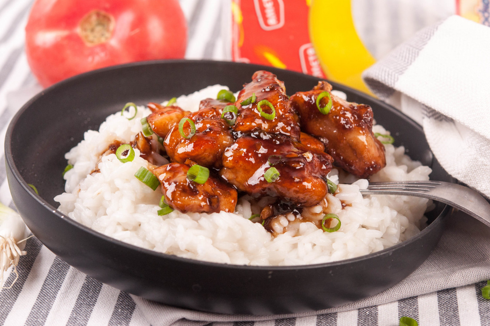

Една рецепта, пристигнала директно от менютата на модерните заведения за бързо хранене! Медено-чесновите пилешки хапки са любими! Леко сладки, силно лепкави, чест избор на малки и големи. Рецептата за приготвянето им е лесна, но важното е използването на качествени продукти за постигане на качествен резултат. Прясното охладено пилешко месо, каквито са пилешките гърди от Лудогорско пиле, са чудесно начало на тази рецепти. Съчетанието на сладко и солено, макар и малко непознато за българския вкус, отдавна се е утвърдило като вкусно и любимо дори и на традиционната трапеза. А с какво да ги сервираме? Чаша бира, или вино, ябълков сок, или сода, всичко им отива!
📖
Лесна
⏱️
25 мин.
🍴
4